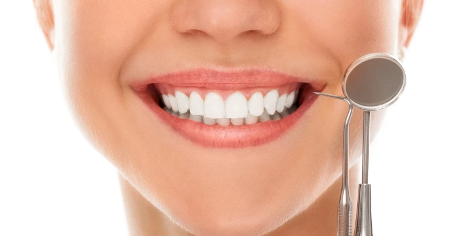

Operacija
Dentalni implant se hiruški postavlja u viličnu kost. Ovo je rutinska procedura i izvodi se u lokalnoj anesteziji.
Zarastanje
Nakon operacije, potrebno vreme integracije implanta u kost iznosi minimum 3 meseca. Tokom procesa zarastanja privremeni zub ili most može biti namešten.
Izrada finalnog rada
Nakon integracije implanata u kosti, pristupa se izradi protetskog rada. Potrebno vreme je 7-10 dana.
Izrada protetskih radova
Pre svakog pristupanja izradi bilo kog protetskog rada, neophodan je ORTOPAN snimak, pregled i detaljan plan terapije. Ukoliko neki zub zahteva ekstrakciju (vađenje), uzimanje otisaka i izrada protetskog rada se vrši nakon 14 dana od ekstrakcije.